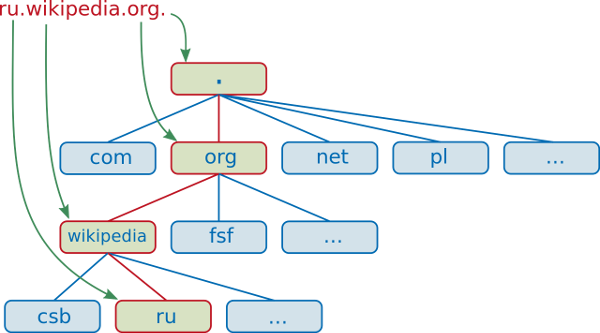

DNS servers
Speaker : Benoit Tellier
Retrieve this presentation online : https://rawgit.com/chibenwa/openup02_02/master/presentation/index.html
And on GitHub
Objectives
- Revision of the DNS protocol
- Use the hosts file
- Basic use of Bind DNS server
- Bind slavery
- Managing DNS zones
- Delegating zones
- Securing a DNS server
About the DNS protocol
Why do we need DNS ?
- Goolge : 74.125.68.100
- Yahoo : 98.139.183.24
- YouTube : 216.58.196.174
- Facebook : 66.220.156.68
- Twiter : 104.244.42.193
- AirBNB : 23.23.155.255
- IPV6 looks like that : 2001:db8::123:4567:89ab:cdef
- I prefer using google.com, yahoo.com, etc...
Domain names
Fully qualified domain names : wiki.minet.net. adh5.minet.net.
Non fully qualified domain names : wiki adh5
HOSTS.txt
Address translation first threw HOSTS.txt file (~10)
Then centralization of the service... (1974)
Decentralization using DNS protocol in 1983
History on wikipediaTop level domain
Example : com. vn. net. fr.
All have their administration rules, and their own prices
DNS root serves TLD
Second level domain
Example : google.com. minet.net. yahoo.fr.
The ones you can by
DNS architecture
Every site maintains a DNS server
SLD and subdomains
UDP and TCP 53
DNS zone
Unit of management for DNS declaration
Manages all or a portion of a domain
Managed by several servers
DNS zone delegation
Delegate a zone management to an other server
Allows information distribution of DNS
Recursive resolution
Introducing cache
Resolve DNS
nslookup google.comServer: 8.8.8.8
Address: 8.8.8.8#53
Non-authoritative answer:
Name: google.com
Address: 74.125.68.101
Name: google.com
Address: 74.125.68.102
Name: google.com
Address: 74.125.68.138
Name: google.com
Address: 74.125.68.113
Name: google.com
Address: 74.125.68.100
Name: google.com
Address: 74.125.68.139
Select your DNS server using /etc/resolv.conf
DHCP
Reverse resolution
nslookup 157.159.40.103Server: 8.8.8.8
Address: 8.8.8.8#53
Non-authoritative answer:
103.40.159.157.in-addr.arpa name = revproxy.minet.net.
FQDN : 103.40.159.157.in-addr.arpa
Whois
whois minet.net Domain Name: MINET.NET
Registrar: GANDI SAS
Sponsoring Registrar IANA ID: 81
Whois Server: whois.gandi.net
Referral URL: http://www.gandi.net
Updated Date: 22-jun-2015
Creation Date: 16-aug-1997
Expiration Date: 15-aug-2016
....
Registrant Name: Association Minet
Registrant Organization: Minet
Registrant Street: 9, rue Charles Fourier
Registrant City: EVRY
Registrant Phone: +33.160766990
Registrant Email: minet@it-sudparis.euDiscovering Bind
About bind
Berkeley Internet Name Domain
1980
Many other free DNS servers
Internet Systems Consortium since 1995
Installing on Debian
apt-get install bind9/etc/init.d/bind9 start | stop | reload | restartnamed.conf
options
{
directory "/etc/bind";
listen-on-v6
{
any;
};
recursion yes;
};
# serveurs de la racine
zone "."
{
type hint;
file "named.cache";
};forwarding
options
{
forward first ;
forwarders
{
203.0.113.51 ;
203.0.113.52 ;
} ;
} ;named.cache
Contains root DNS ips
/etc/bind/db.root
. 3600000 IN NS A.ROOT-SERVERS.NET.
A.ROOT-SERVERS.NET. 3600000 A 198.41.0.4
A.ROOT-SERVERS.NET. 3600000 AAAA 2001:503:BA3E::2:30
;
; FORMERLY NS1.ISI.EDU
;
. 3600000 NS B.ROOT-SERVERS.NET.
B.ROOT-SERVERS.NET. 3600000 A 192.228.79.201
B.ROOT-SERVERS.NET. 3600000 AAAA 2001:500:84::BValidating named.conf syntax
Command named-checkconf
$ named-checkconf
/etc/named.conf:11: unknown option ’recurion’Managing zones
named.conf
acl esclaves
{
192.0.2.51 ;
203.0.113.33 ;
} ;named.conf
zone "example.com"
{
type master ;
file "master/example.com" ;
allow-transfer
{
esclaves ;
} ;
} ;named.conf
zone "100.51.198.in-addr.arpa"
{
type master ;
file "master/100.51.198.in-addr.arpa" ;
allow-transfer
{
esclaves ;
} ;
} ;Being a slave
zone "example.org"
{
type slave ;
file "slave/example.org" ;
masters
{
192.0.2.33 ;
} ;
} ;zone files
- Composed of :
- Directives :
- $INCLUDE
- $ORIGIN
- $TTL
- Resource record
Resource record
| A | address |
| AAAA | IPv6 address |
| CNAME | canonical name |
| MX | mail exchange |
| NS | name server |
| PTR | pointer |
| SOA | start of authority |
zone file example
$TTL 1d
@ IN SOA ns.example.com. (
2016022001 ; serial
8h ; refresh
1w ; expire
3h ) ; negative caching TTL
NS ns.example.com.
NS ns.example.org.
MX 0 mail0.example.com.
MX 10 mail1.example.com.
anakin A 198.51.100.33
darkvador CNAME anakinzone inverse example
$TTL 1d
@ IN SOA ns.example.com. (
2016022001 ; serial
8h ; refresh
1w ; expire
3h ) ; negative caching TTL
NS ns.example.com.
NS ns.example.org.
33 PTR mail.example.com.
51 PTR www.example.com.Delegating zones
sub-domain NS ns.sub-domain
ns.sub-domain A 198.51.100.33Verofying zone files
$ named-checkzone example.com example.com
zone example.com/IN: NS ’ns.example.com’ has no address records (A or AAAA)
zone example.com/IN: not loaded due to errors.dig command
dig google.com;; OPT PSEUDOSECTION:
; EDNS: version: 0, flags:; udp: 512
;; QUESTION SECTION:
;google.com. IN A
;; ANSWER SECTION:
google.com. 24 IN A 216.58.199.206
;; Query time: 116 msec
;; SERVER: 8.8.8.8#53(8.8.8.8)
;; WHEN: Tue Feb 23 10:52:42 ICT 2016
;; MSG SIZE rcvd: 55DNS round robin
mail IN A 192.168.0.4
IN A 192.168.0.5
IN A 192.168.0.6mail A 192.168.0.4
mail A 192.168.0.5
mail A 192.168.0.6mail A 192.168.0.5
mail A 192.168.0.6
mail A 192.168.0.4mail A 192.168.0.6
mail A 192.168.0.4
mail A 192.168.0.5mail A 192.168.0.4
mail A 192.168.0.5
mail A 192.168.0.6...
Bind and security
Tips
Non privilege user handled by package
Option version none ;
TSIG
Transaction signature
Hash + secret + hour
Configured in named.conf
TSIG : generating secret
$ dnssec-keygen -a hmac-sha256 -b 128 -n HOST s1-s2.
Ks1-s2.+163+22242$ cat Ks1-s2.+163+22242.key
s1-s2. IN KEY 512 3 163 6Bmt+px0gMyIznRcv+Xg2A==$ cat Ks1-s2.+163+22242.privateTSIG and named.conf
key s1-s2.
{
algorithm hmac-sha256 ;
secret "6Bmt+px0gMyIznRcv+Xg2A==" ;
} ;
server 198.51.100.33
# s2 IP address
{
keys
{
s1-s2. ;
} ;
};Idem on s2